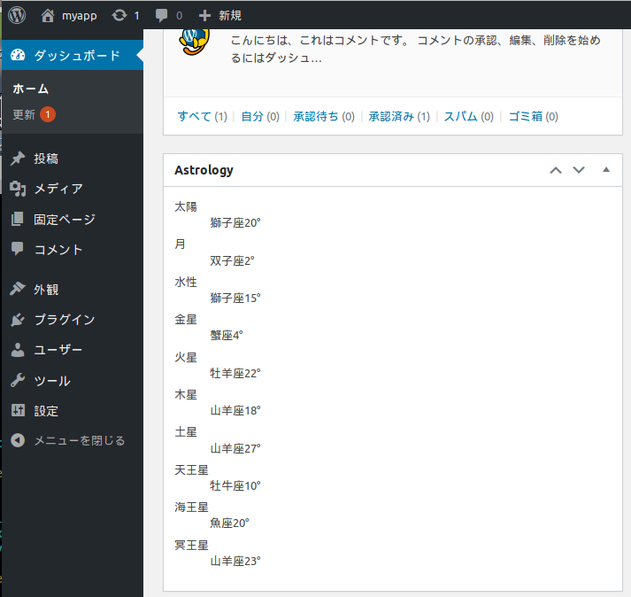

当サイトではswiss Ephemerisを使った現在の星の位置を提供するバイナリを提供しています。
こちらを各種言語からexecで読み込むことで簡単にAPIを実現できます。
以下の形態が選べます。
配布形式：Linux用実行バイナリファイル
対象天体：10天体+プラシーダスによる12ハウス
料金：11000円(税込)
配布形式：wordpressプラグイン
対象天体：10天体+プラシーダスによる12ハウス
料金：22000円(税込)
Xserverで動作確認済
対象天体はJSTのみとなります。
ハウス計算はプラシーダスのみとなります。
swetest2というファイルが提供されますので、実行権を設定の上実行してください。
./swetest2 -y 2020 -m 1 -d 1 -h 12 -i 34 -s 56 -a 35.453962 -o 139.617206
オプションは下記のようになっています。
-y: 対象の年(4桁)
-m: 対象の月
-d: 対象の日
-h: 対象の時刻
-i: 対象の分
-s: 対象の秒
-a: 対象の緯度
-o: 対象の経度
下記のような結果が出ます。
2020 1 1 12 34 56.000000 35.453962 139.617206 planet,0,280.161690 planet,1,347.915524 planet,2,274.618479 planet,3,314.592475 planet,4,238.485003 planet,5,276.704751 planet,6,291.412435 planet,7,32.692755 planet,8,346.267415 planet,9,292.390525 house,1,35.701497 house,2,66.260460 house,3,89.640650 house,4,111.857620 house,5,137.336304 house,6,171.255541 house,7,215.701497 house,8,246.260460 house,9,269.640650 house,10,291.857620 house,11,317.336304 house,12,351.255541 sensitive,11,98.387447 sensitive,13,359.832612 sensitive,15,1.598955
APIとしての利用法等の質問にはお答えいたしません。
セレスなどの角度もご希望の場合は追加料金で対応いたします。

購入を希望される方はinfo◆ogatism.jpまでメールをお願いします。